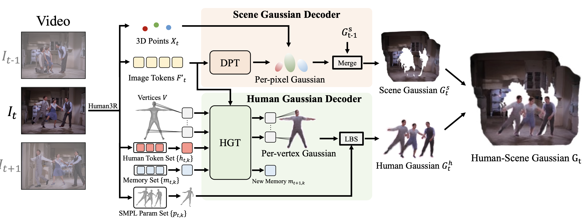
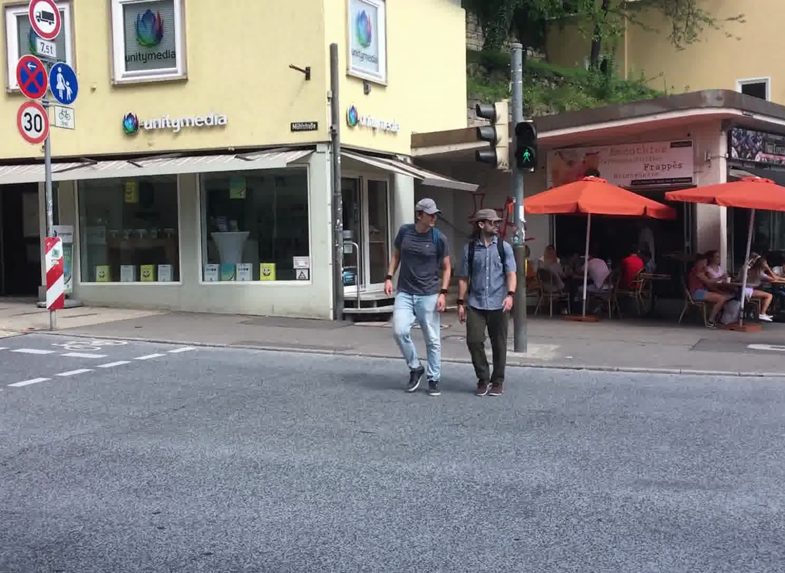
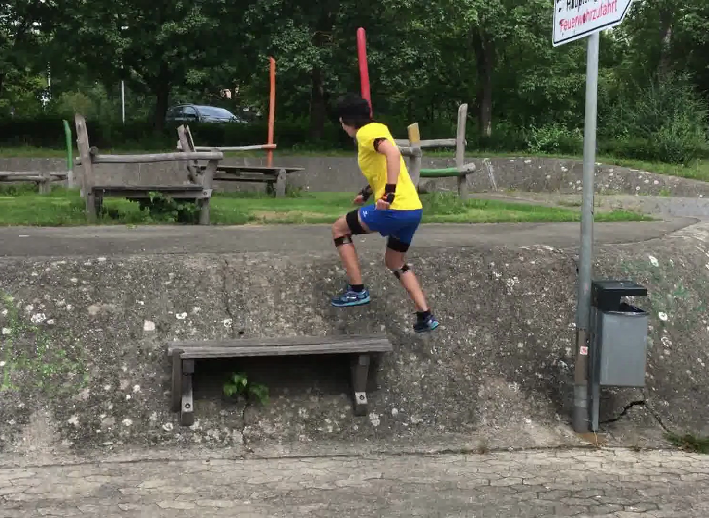
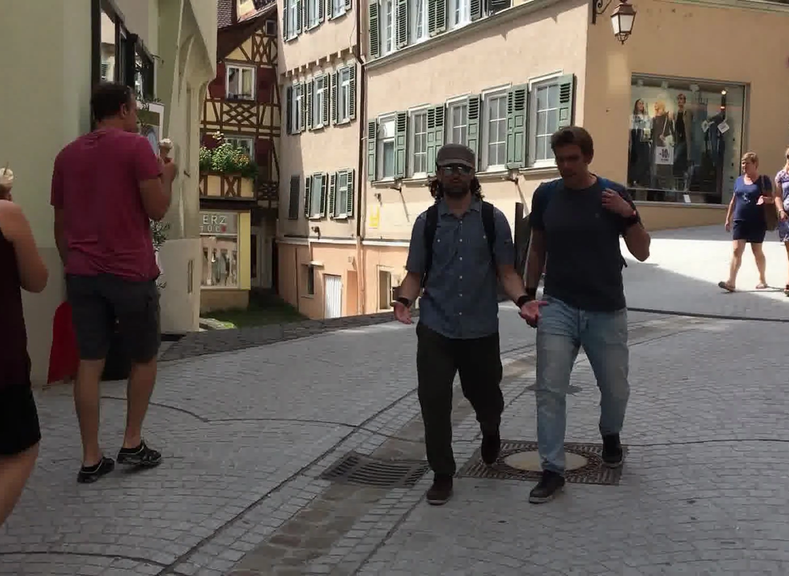
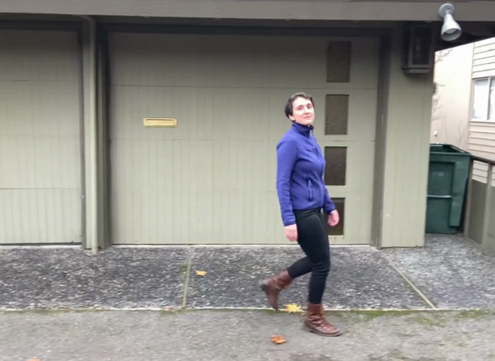

Reconstructing dynamic human-scene environments from monocular videos is a challenging problem that requires jointly modeling scene geometry, camera motion, and non-rigid human dynamics while enabling photorealistic rendering. Recent feed-forward methods can efficiently predict geometry, but they are often limited to non-photorealistic representations such as point clouds and meshes, or they fail to handle non-rigid objects, particularly dynamic humans. To fill this gap, we present GUSH3R (Gaussian-Unified Scene Human 3D Reconstruction), a feed-forward framework for online dynamic human-scene reconstruction. From a monocular human-scene video, our method reconstructs dynamic humans (everyone) and static scenes (everywhere) in a single forward pass (all at once) as 3D Gaussian Splatting (3DGS) primitives (as gaussians), which are geometrically consistent and capable of novel view synthesis. Experiments on monocular human-scene datasets demonstrate that our approach achieves competitive novel view synthesis quality while significantly improving inference efficiency compared to optimization-based methods.

GUSH3R reconstructs a dynamic human-scene representation from a monocular video using two newly introduced branches: the Scene Gaussian Decoder and the Human Gaussian Decoder. Each frame is processed by the foundation model Human3R to extract human and image tokens, along with scene point clouds and human mesh vertices. The Scene Gaussian Decoder takes the point clouds as a geometric prior and predicts scene Gaussians from the image token using a Dense Prediction Transformer. The Human Gaussian Decoder takes the human meshes as a geometric prior and predicts human Gaussians from the image and human tokens using a Human Gaussian Transformer. The predicted human and scene Gaussians are then merged in the same metric space to render the final human-scene representation.




Qualitative examples of 4D human-scene Gaussian reconstruction from monocular videos.
@article{abe2026gush3r,
title = {GUSH3R: Everyone Everywhere All at Once as Gaussians},
author = {Keito Abe and Kaede Shiohara and Takashi Otonari and Toshihiko Yamasaki},
journal = {arXiv preprint arXiv:2606.11894},
year = {2026}
}